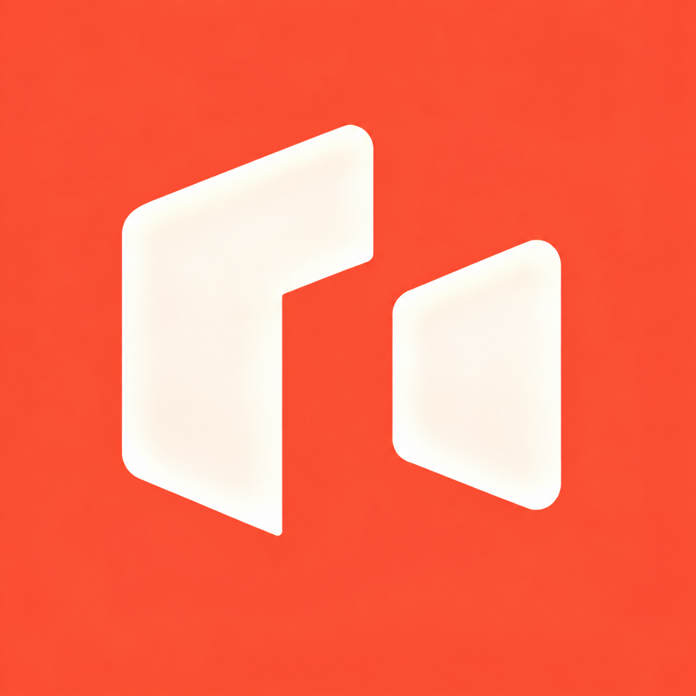
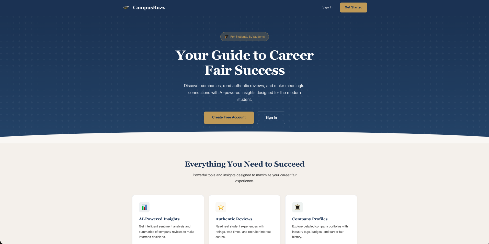
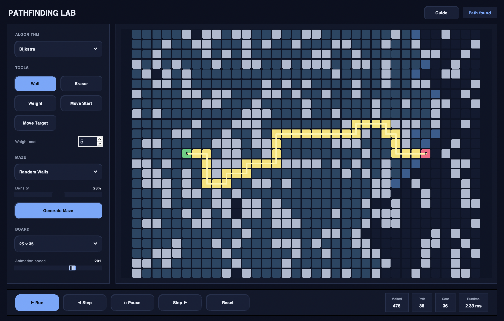

Portfolio and Resume
Daniel Lee
Software engineer focused on data systems, ML applications, and polished product experiences. I build tools that make technical work easier to use and more accessible.
Current focus
Building portfolio-ready projects with practical valueOpen to opportunities
Software, data, and AI/ML roles in tech and financeGet to know more
About

I graduated from Purdue University
in 2026 with a B.S. in Data Science and am now pursuing an M.S. in Computer Science at the University of California, Davis with an expected graduation date of 2028.
My work sits at the intersection of software engineering, data engineering, and
applied machine learning.
I like creating products that make life easier. My hobbies include
listening to and producing electronic music, playing chess, and following the UFC and NBA.
Education
Data Science, B.S.
Computer Science, M.S.
What I build
Data pipelines
ML tooling
Fast, usable web apps
Tools I use
Explore my stack
Experience
Programming Languages
JavaExperienced
PythonExperienced
SQLIntermediate
RIntermediate
C++Intermediate
HTML / CSSIntermediate
Developer Tools
Microsoft AzureIntermediate
Node.jsIntermediate
Jupyter Notebook / LabExperienced
GitIntermediate
PyTorchIntermediate
Hugging Face TransformersIntermediate
Selected work
Projects
Hover over a card to see automatically scrolling previews.



Let’s connect
Contact
Connect with me on LinkedIn to see my professional experience.
Browse active projects, experiments, and code samples.